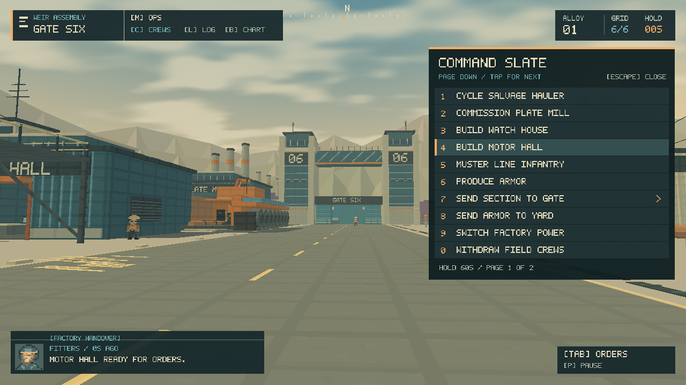
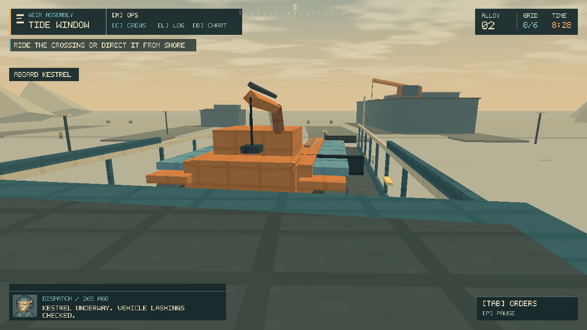

Orra Basin
A first-person real-time strategy campaign about the towns that need a dry road and the crews that need a deep channel. Command from a factory gantry, a working ferry or a station in orbit.
Play with keyboard and mouse, touch, or tracked WebXR controllers. Use Pause to save, rehearse the opening, change settings or read the watch briefing. Build identifier · Native builds


Credits and storage
The game depicts fictional military conflict. There are no in-game purchases or game accounts. Saves use this site's IndexedDB, and preferences and local diagnostics use browser storage. Clearing site data removes them. Native builds use local user storage. The game does not transmit diagnostic or play records. GitHub Pages receives ordinary hosting requests. GitHub privacy statement
Original art, voices, fonts and score · MIT code · CC BY 4.0 art · SDL · Lua